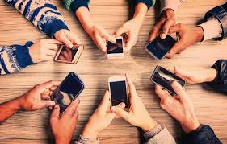

How Smart Phones Affects Teenagers
Three MAIN things that Cellphones affect Teenagers
- Mental Health
- Social Skills
- Academic Performance
Mental Health
- Excessive smartphone use, particularly social media, has been linked to increased rates of anxiety and depression in teenagers
- Social media can create unrealistic beauty standards, leading to negative body image perceptions, especially among girls
- Smartphones facilitate cyberbullying and online harassment, which can have severe psychological consequences
Summary: Basically Social Media can cause Mental Health Problems to Teenagers like anxiety, depressions, and many other stuffs. Which could lead up too negative on mental health.
 Learn More About how cell phones affect teenager in Mental Health
Learn More About how cell phones affect teenager in Mental Health
Social Skills
- Spending excessive time on smartphones can lead to a decrease in face-to-face social interactions, potentially hindering the development of crucial social skills
- Reduced social interaction may affect the ability to read social cues and develop empathy, which are essential for healthy relationships
- Constant exposure to social media can lead to FOMO, causing anxiety and feelings of inadequacy
Summary: Basically Spending too much time on Smart Phone or any other devices could lead up too potentially hindering the development of crucial social skills and can lead to FOMO.

Learn More About how cell phones affect teenager in social skills
Academic Performance
- Smartphones can be a major distraction in the classroom and during study time, leading to decreased concentration and academic performance
- Late-night smartphone use can disrupt sleep patterns, which are crucial for cognitive function and learning
- Social media and online entertainment can lead to addiction and reduced productivity, impacting study habits and academic outcomes
Sammary: Basically Smart Phones could be a majhor distraction in the classroom and during studying times which could lead up too students getting low scores and grades on their academic performance. This is because of Smart Phones could be very addictive to teenagers also even adults too.
Learn More About how cell phones affect teenager in academic performance